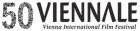

Roma wa la n'touma
Rome Rather Than You

Tariq Teguia – Algerien/F/D 2006 – 111 Min.
B: Tariq Teguia – K: Hacène Ait Kaci , Nasser Medjkane – S: Andrée Davanture , Rodolphe Molla – P: Helge Albers, Cati Couteau, Tariq Teguia – Mit Samira Kaddour, Rachid Amrani, Ahmed Benaissa
35mm – Arabisch

Kamel und Zina leben in Algerien zwischen Angst vor islamischen Fundamentalisten und Polizeigewalt. Kamel hofft, in Italien sein Glück zu finden, doch um das Land verlassen zu können, muss er sich zunächst gefälschte Papiere besorgen. Gemeinsam mit Zina macht er sich auf den Weg durch die Vororte von Algier, um die Reise nach dem vermeintlichen Glück antreten zu können. Im Verlauf der Wanderung rücken die Stadt selbt und ihre Bewohner zunehmend ins Zentrum des Films. – Viennale V'07 Spielfilme
Tariq Teguia, geb. 1966 in Algier. Absolviert ein Philosophie- und Kunststudium in Paris, wo er auch als freischaffender Fotograf arbeitet. Dreht seit den frühen 90er Jahren mehrere Kurzfilme, 2002 realisiert er mit "The Fence" sein Dokumentarfilmdebüt. "Rome Rather than You" ist sein Spielfilmdebüt.